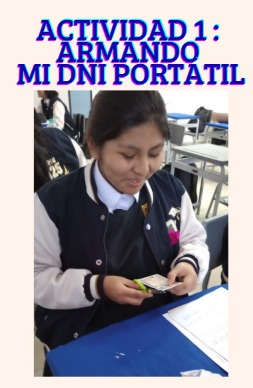
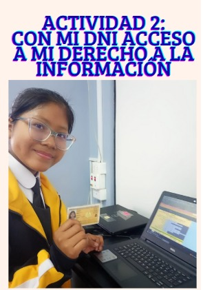
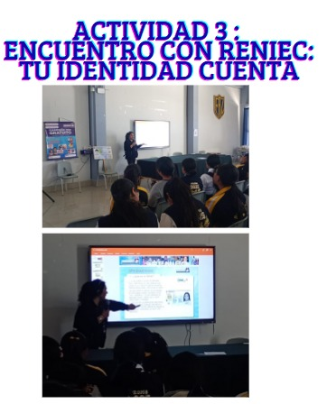
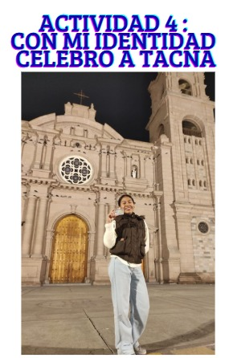

Institución Educativa Emblemática
"Francisco Antonio de Zela"
Alma Mater de la Mujer Tacneña
Buena Práctica de Gestión
Con el uso de mi DNI, activo mi rol de ciudadana

Actividad 1
Armando mi DNI portátil

Actividad 2
Con mi DNI accedo a mi derecho a la información

Actividad 3
Encuentro con RENIEC:
Tu identidad cuenta

Actividad 4
Con mi identidad celebro Tacna